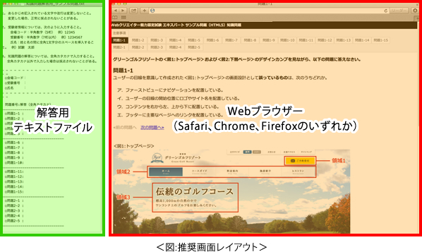
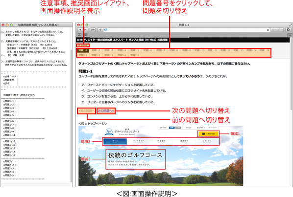

注意事項
知識問題を解答するにあたり、以下の注意事項に留意してください。
- 知識問題の制限時間は20分です。
- 「知識用」フォルダーには解答するために必要なファイルが格納されています。
- 知識問題は、「問題1-1」から「問題1-15」と「問題2-1」から「問題2-5」の全20問で出題されています。
- 「問題1」のデザインカンプは、画像編集ソフトで作成されており、特定のWebブラウザーのスクリーンショットを表すものではありません。
- 知識問題は、HTML5およびCSS 2.1、CSS3に対応しています。ただし、HTML5の比較の説明として、HTML 4.01およびXHTML 1.0の説明が使用されることがあります。
※ 試験問題に記載されている会社名又は製品名は、それぞれ各社の商標又は登録商標です。なお、試験問題では、® 及び ™ を明記していません。
推奨画面レイアウト
各ウィンドウの配置は、以下の推奨画面レイアウトを参考に配置してください。
- 知識問題では、解答用テキストファイル、Webブラウザー（Safari、Chrome、Firefoxのいずれか）の二つのウィンドウを同時に表示させておきます。
- 推奨する画面のレイアウトは＜図:推奨画面レイアウト＞の通りです。

- 解答用テキストファイル、Webブラウザーのウィンドウはドラッグすることにより位置や大きさを調節することができます。
- 知識問題操作練習を行う際にレイアウトを自由に設定できます。
画面操作説明
各ウィンドウ内のリンクに関する操作は＜図：画面操作説明＞の通りです。
